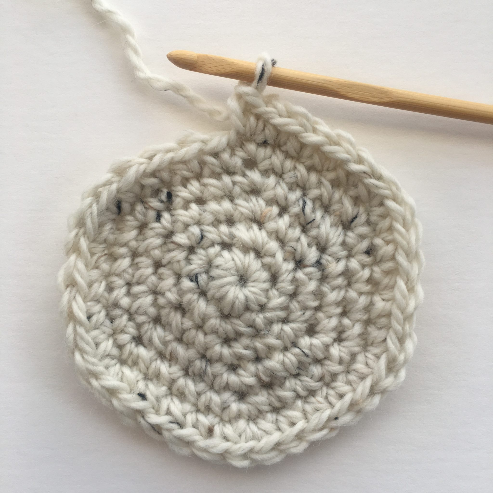

We are going to begin by crocheting a circle to make the crown
Don't forget to mark the first stitch of each round!
- Chain 4, slip stitch to form a ring
- Make 6 single crochets in the ring
- Make 2 single crochet in each stitch all around
- Make 2 single crochet in next stitch and continue around
- Make a single crochet in the next 2 stitches, then 2 single crochets in next stitch and continue around
- Make a single crochet in the next 3 stitches, then 2 single crochets in next stitch and continue around
- Make a single crochet in the next 4 stitches, then 2 single crochets in the next stitch and continue around
- Make a single crochet in the next 5 stitches, then 2 single crochets in the next stitch and continue around
- Make a single crochet in the next 6 stitches, then 2 single crochets in the next stitch and continue around
- Make a single crochet in the next 7 stitches, then 2 single crochets in the next stitch and continue around
- Make a single crochet in the next 8 stitches, then 2 single crocjets in the next stitch and continue around
